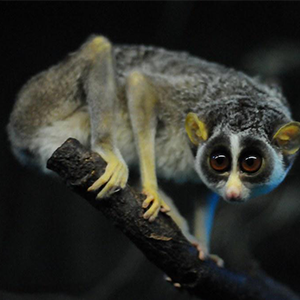
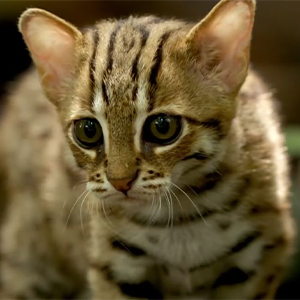
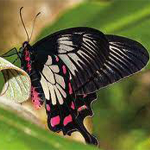

Wildlife refers to undomesticated animals, plants, fungi, and other organisms that live and thrive in their natural habitats without direct human influence or intervention. It encompasses a vast array of species, ranging from microscopic organisms to large mammals and towering trees. Wildlife plays a crucial role in maintaining ecological balance, contributing to biodiversity, and supporting various ecosystems around the world.
Horton Plains National Park
Horton Plains National Park is a picturesque and ecologically rich protected area located in the central highlands of Sri Lanka. This national park is situated in the Nuwara Eliya District and is part of the Central Highlands UNESCO World Heritage Site. Horton Plains is renowned for its diverse landscape, unique biodiversity, and stunning natural features, making it a popular destination for both nature enthusiasts and tourists.
Udawalawe National Park
Udawalawe National Park is a renowned wildlife sanctuary situated in the southeastern part of Sri Lanka. Established in 1972, the park covers an extensive area of approximately 308 square kilometers (119 square miles) and is located in the Sabaragamuwa and Uva provinces. Udawalawe is recognized for its diverse ecosystems and, most notably, its thriving population of Sri Lankan elephants.
| Image | Animal | Interesting facts | Other National Parks |
|---|---|---|---|
|  | The Red Slender Loris | The Red Slender Loris, native to Sri Lanka, features distinctive reddish-brown fur, large nocturnal eyes, and a slender frame. Endangered due to habitat loss and the pet trade, it inhabits tropical rainforests, relying on slow, deliberate movements. Primarily nocturnal, it feeds on insects, small vertebrates, and tree gum. Conservation efforts focus on habitat protection and research to ensure the survival of this unique and elusive primate species./td> | Yala National park ↗️ Wilpattu National park ↗️ |
|  | The Ceylon Rose Butterfly | The Ceylon Rose Butterfly (Pachliopta jophon) is an exquisite and endangered species exclusive to the central highlands of Sri Lanka. Characterized by its captivating black wings adorned with vibrant red and white patterns, it graces the montane cloud forests with its presence. Conservation endeavors concentrate on safeguarding its fragile habitat, combatting challenges like habitat degradation, and mitigating the impact of climate change. As a symbol of Sri Lanka's diverse and threatened biodiversity, the Ceylon Rose Butterfly holds both aesthetic and conservation significance. | Yala National park ↗️ Wilpattu National park ↗️ |
|  | The Rusty-Spotted Cat | The Rusty-Spotted Cat (Prionailurus rubiginosus) is a diminutive feline species native to Sri Lanka, recognized for its small size and distinctive rusty-brown fur covered with numerous small spots. As one of the smallest wild cat species globally, it inhabits dense forests and grasslands. The Rusty-Spotted Cat is elusive and nocturnal, preying on small mammals, birds, and insects. Despite its fascinating nature, this cat faces threats from habitat loss and fragmentation. Conservation efforts aim to protect its habitat and raise awareness about the importance of preserving this unique and endangered species in Sri Lanka. | Yala National park ↗️ Wilpattu National park ↗️ |
| Summary of the types of Wildlife in Sri Lanka | |||